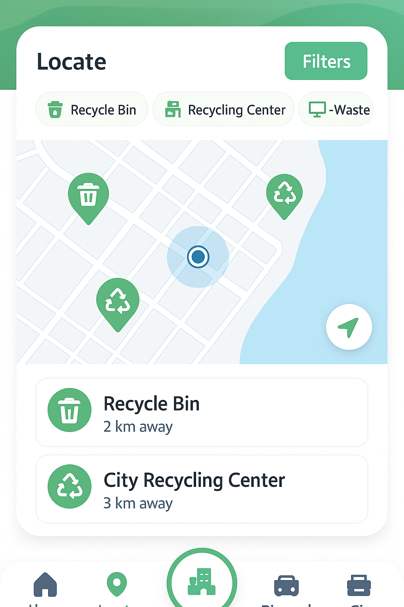

Preview of Ecolink’s interface and concept visuals, showcasing our main screens and feature icons.

Locate nearby bins, recycling centres, and e-waste points.Main dashboard showing user actions and quick navigation.Feature icons for booking bins, paying fees, finding recycling points, and gig jobs.Ecolink official logo, people, recycle symbol, and leaf motif.App screen mockups showing cohesive design for all features.
Team
We are FIZIS. Five humans building Ecolink with a user-first HCI process that moves from research to ideation to prototypes to testing, and now the final demo.